You give it a seed and it makes a map. The map is cut into rectangles using Boris the Brave's list of 5×5 rectangle subdivisions, and each rectangle becomes a zone with a law. The law decides what's floor and what's solid inside that zone, and where two zones meet their laws blend. I'm treating it as a tool for now and holding off on deciding what it's for.
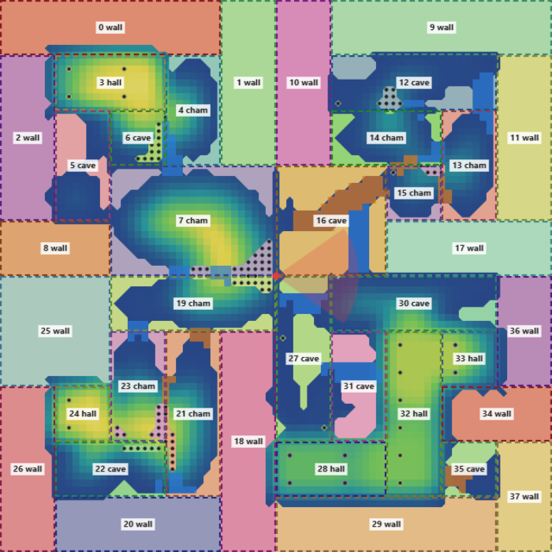
At first every map could use every law, and they all came out looking alike. So each seed now draws two or three laws from a longer list. One map gets rooms and chambers, the next gets maze and spine.
Stairwells and glyphs only fit in big zones. Giving them a guaranteed share squeezed other laws off the map, and taking the guarantee away made them almost disappear. They ended up as accents added on top of a map's main laws, in about half of maps.
The generator keeps a graph of which zones connect. I wanted to begin at the end of something, so the player starts in a dead end of that graph, or in an edge zone when the map doesn't have one. The exit uses the same rule in reverse, picking somewhere a long walk away. Walking into it drops you into the next seed.

By this point the maps were stable enough that I got nervous about breaking them. Every version since has been frozen before changing anything.
The walls only use two mesh shapes, long and short, so everything else had to come from texture. Textures tile at a fixed scale in both directions and get cut off where they reach the ceiling. Nothing stretches.
Each map picks one cave type, dry, wet or overgrown, and one set of rock textures. Letting every zone choose its own would turn the whole thing into bowls of oatmeal. Built laws like halls and mazes pull from their own lists. Everything gets crushed to 128 pixels and 32 colours and drawn at about 285 lines.
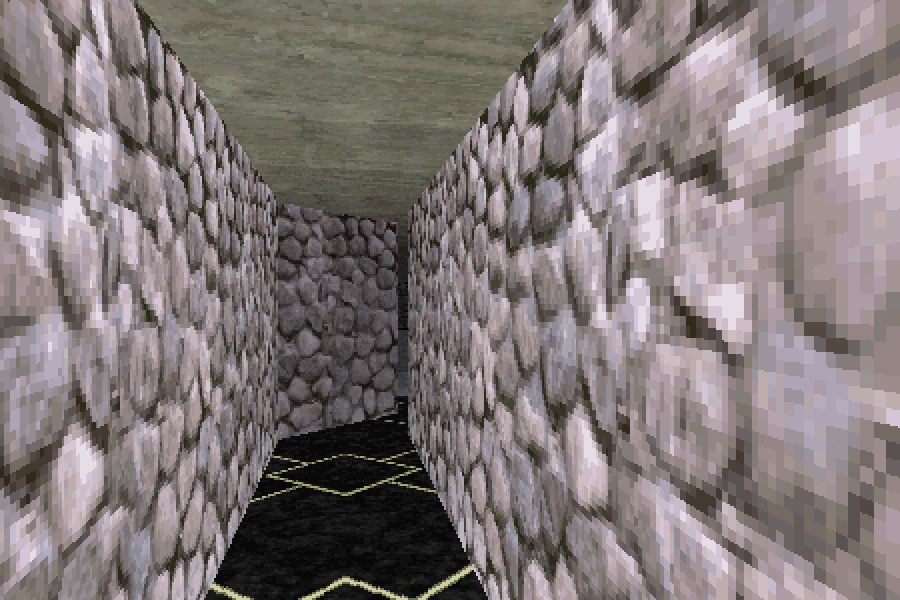
Once I could walk around in it, the first-person view had to be the main thing on the page. I cut up a screenshot to show how I wanted the panels.

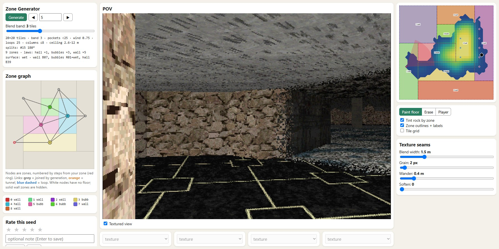
The dropdowns later became one column per law, however many the map has, so I can see and override each law's wall, floor and ceiling.
Zones used to change texture on a hard line. I added sliders for how wide the blend is, how coarse the dither is, how far the line wanders and how much it fades. Walls only blend along their own length, so a wall running beside a zone line keeps its texture.
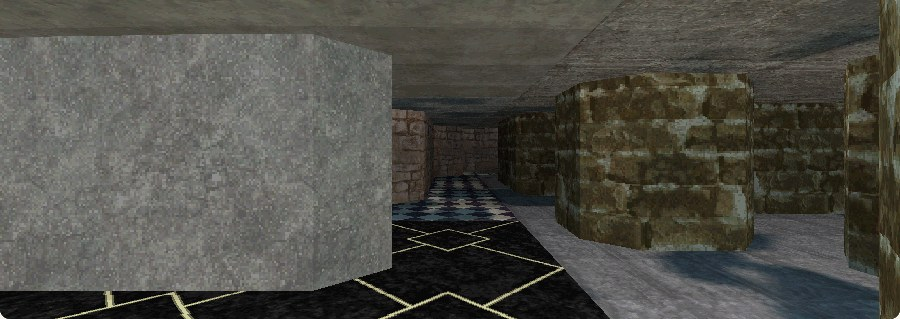


After playing with them I landed on something much tighter than any of these, a 0.25 metre band with a full fade.
I collected some images of places I liked, among them a cistern of huge piers, a gothic hall with a checker floor, a rubble passage lit from slots in its wall, and a bath house with one hole in its vault. They share things the maps didn't have. The ceilings are arches. The light comes from somewhere. The spaces repeat.
I wanted a lot of variety within maps and between them, so all of this is dealt by the seed. Each map gets a colour grade, a darkness, a light recipe and a small deck of vault styles for its laws to draw from. None of it can move a wall, which keeps the simple generation underneath intact.
My idea was to take whole zones, draw a line down one axis, and mirror them, sparingly and at random. It suits the generator because a zone's centre line always lands exactly on the grid. The line usually becomes a walkable aisle down the middle, and sometimes a solid spine wall. Neighbouring zones and tunnels wear the symmetry away at the edges, which I like.

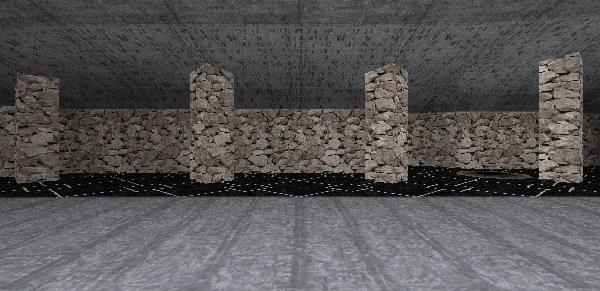
The ceiling height comes from how far you are from the nearest wall, on a curve. Corridors become barrel vaults, and narrow openings get low arches because height follows width. There's no arch model anywhere. Columns can either count as walls, which makes the ceiling arch from column to column, or be ignored, and then the vault carries straight over them.

Curved ceilings first cut sawtooth edges into diagonal walls. Keeping the ceiling level for the first 0.6 metres fixed that, and it reads like a cornice.
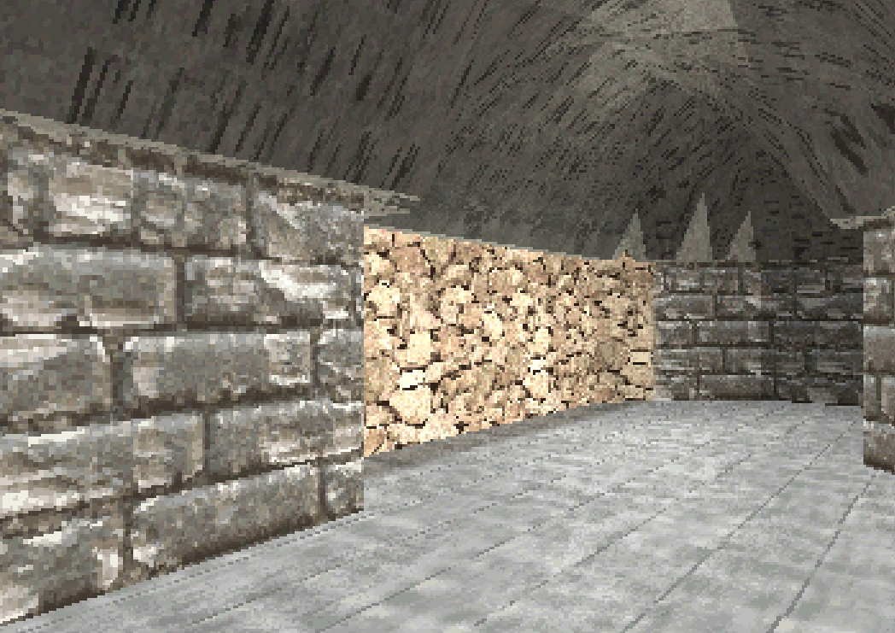
Light spreads through open floor so it stops at walls, but each wall was reading its brightness from solid points that had copied the brightest neighbour, including the room behind it. Walls now read light from the side they face.
The light shafts were my favourite thing so far, so they got more attention. They vary in size now, and high ceilings are far more likely to have one. I tried several colours per map and went straight back to one. The opening used to be a separate shape that clipped against the curve of the vault, so it's now painted onto the ceiling itself.

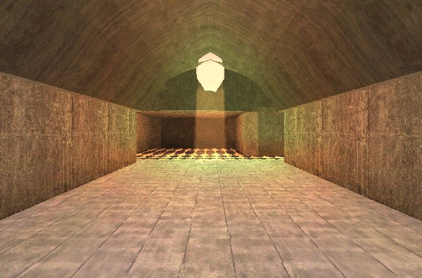

I'd only been using 61 of the 274 textures I'd pulled from my folders, so I added the rest and made a page to keep or cut each one by hand. My cuts weren't reaching the generator for a while. The bug only happens in Firefox, which is what I use, because Firefox keeps saved data separately for each local file. The sort page now opens from the generator and sends its choices across.

Plenty of the overgrown tiles turned out to be vines on a pure black or green background. Used as patches they made flat blotches, so they now only hang from ceilings, with the green keyed out.


Walking around seed 6, I noticed the line where the walls meet the vault could hold something. A band or a pipe could wrap around the room along that line and then run down to the floor before it meets the next zone.


Piping doesn't have to mean pipes. It's one shape swept along a path, so different values give different things. It'll be spread around by seed eventually, but I need to find the limits first, so for now there's a test panel that works on one zone at a time.
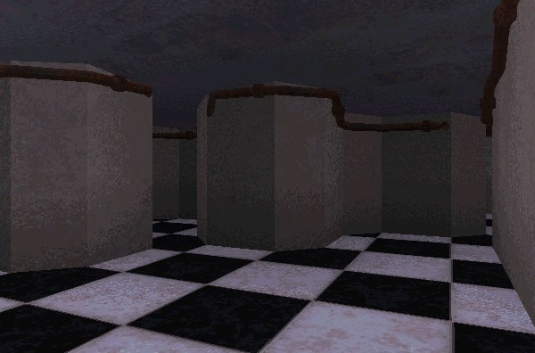

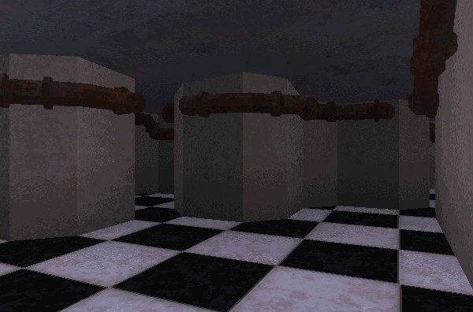
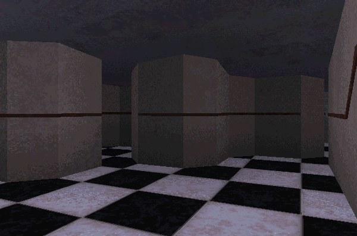
Once I'd set the limits, the seed took over. It doesn't roll each slider on its own, because lots of small differences all read as the same pipe. It picks one of five kinds for a law instead: my own settings, one fat main, a bundle of five thin lines, a pair that steps with the ceiling, and a thin pair that bridges long gaps. Each one gets its own colour of metal.
At first every zone of a plumbed law got pipes, so plumbed zones kept running into each other. Now pipes go in a few zones that never touch, not even at a corner, and about a quarter of maps have none at all.
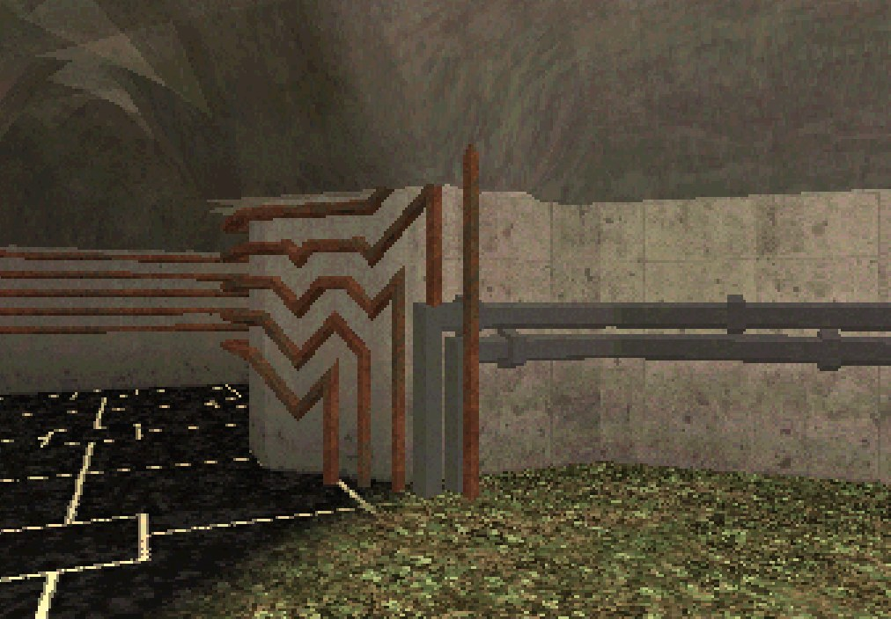
The joints took a few rounds. Strands swapped sides where they dropped to the floor, bridges went flat, and some pipes passed through a wall and came back out. That last one came from the grid: where two walls share a square, the check for which side is open looked too far and found the wrong floor. Now every strand has its own path and its own joints, so a collar can't drift off the pipe it belongs to.

Bridges only cross real openings, between door jambs that face each other, and they always clear the player's head.

The same sweep makes the rest: moulding, cornice, dado rail, skirting, ledge, cables and ribs, each with its own outline. I tuned each one in the test panel. Moulding, cornice, dado, skirting and ledge belong to a law, so a kind of place keeps its own decoration, and caves never get any. Cables and ribs are rare, like pipes. Each map picks one look per trim and keeps it everywhere.
The side panel now shows what's in the zone I'm standing in, and I can change, take out or add trims right there.
The skylight beams all pointed straight down. I drew what I was after: light coming in from the opening at an angle.

The first try swapped the beams for soft cones. That lost the blocky look I liked, and they still pointed down.
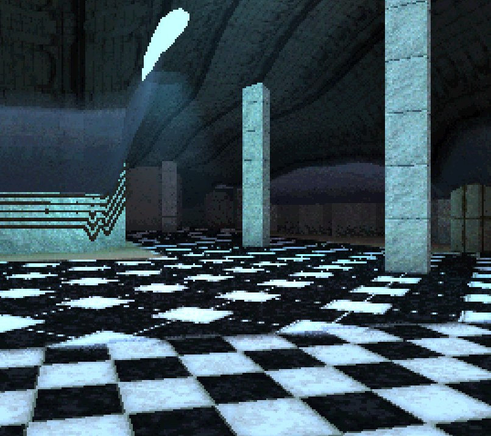
Now each map has one sun. Every beam leans the same way and stops where it hits a wall. Light also travels in straight lines from the opening now, so walls throw shadows and the pool on the floor lands where the beam does. One bug on the way: light ran along the foot of the walls, because the band that traces each wall filled itself from its own neighbours.
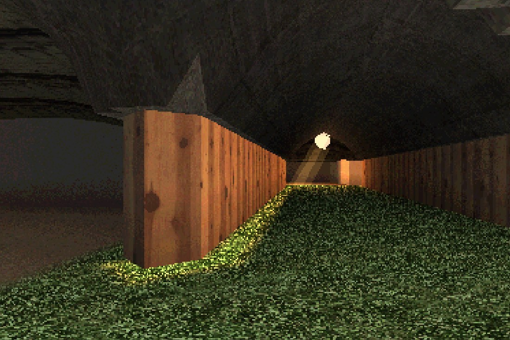
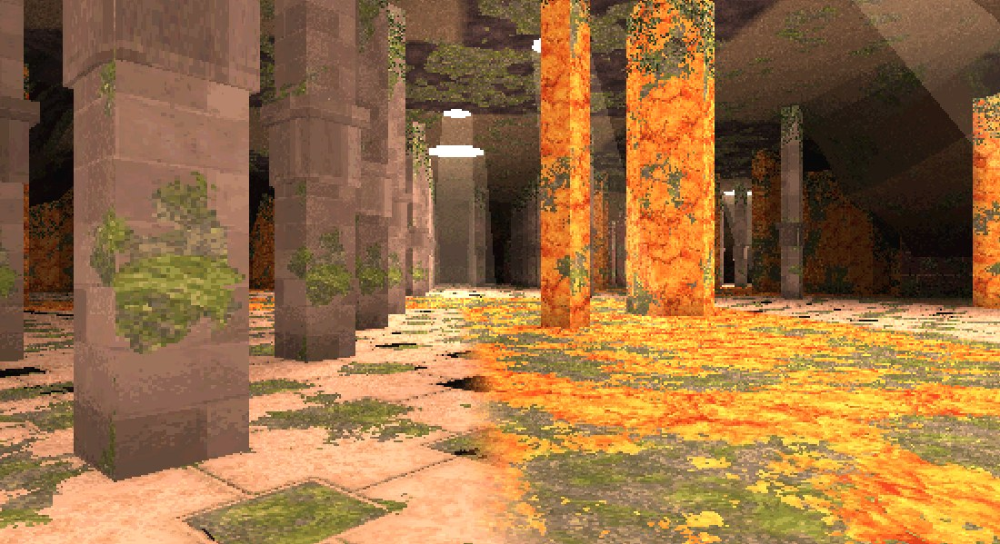
I also cut the biggest maps, 60 by 60 tiles, which were too much to walk.
For v5 I wanted another layer, literally: floor cut away so you can go lower. The question was how you'd get down there, or whether it should just be a pit.
It fits the tiles the map already comes from. Every tile corner already says open or solid, and the walls follow where those meet. Now each tile also keeps its own four corner heights, so a cliff is just two tiles that disagree along the edge they share, and the same code that traces walls traces cliffs.
The seed sinks a few zones, each to its own depth, and cuts a ramp in from one edge. A sunken zone with one ramp could cut off whatever lay past it, so the seed adds ramps until you can get everywhere you could before, or leaves the zone alone. You can drop off any edge, but only climb back up a ramp. On some maps it flips: the whole floor drops and the zones that would have sunk stay up as islands.
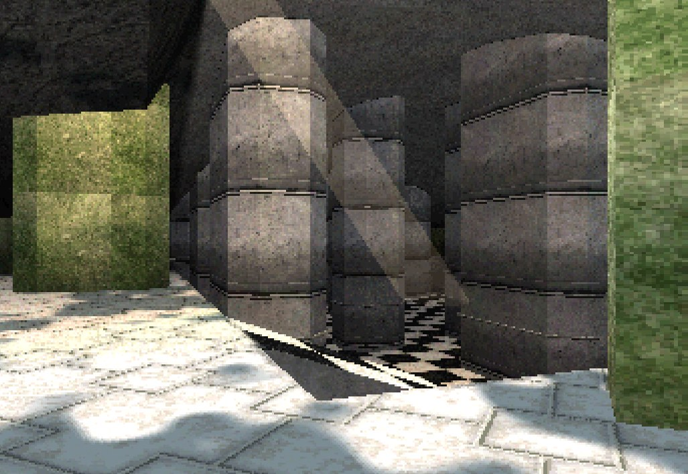
The first pass had a few problems. Beams stopped at the old floor height, a wall cutting across the edge left a see-through gap, and some ramps led nowhere: into a wall, or up out of one pit and straight to the edge of another.
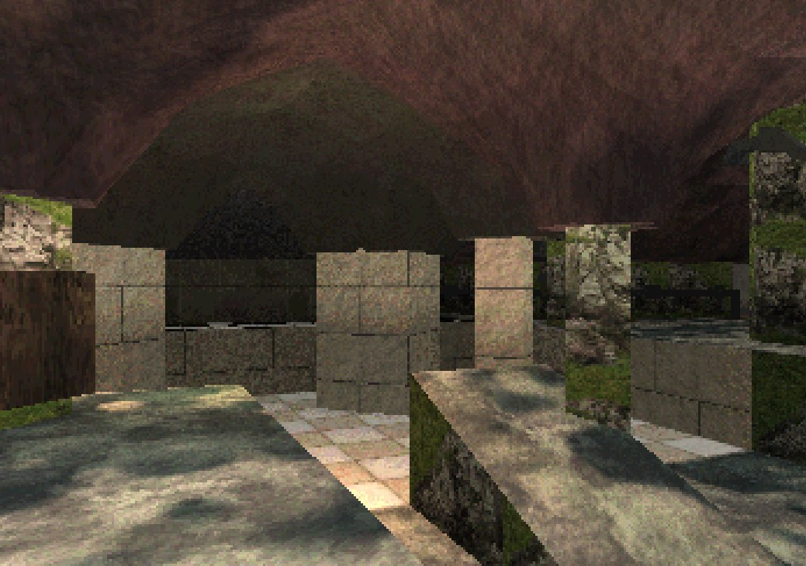
I also got stuck in a pit by the exit, which turned out to be the exit working from the floor below it. Now it only takes you from its own floor, and sunken zones keep clear of it.
Sinking whole zones worked, but I wanted elevation to come from the same tiles the walls come from. The walls are drawn from corner tiles: each corner is open or solid. So the corners got more colours instead, one per level, with the seed choosing how many, and each law on a map dealt a level.
Every level is a storey, about one and a half metres. You can drop down any cliff but not climb one, so the hard part is getting back up. I drew what I wanted on a few seeds by hand, and the generator learned from those drawings.

Causeways come first: a flat strip between two areas at the same level, across lower ground. One level up, a causeway is filled in solid underneath. Two levels up, the fill gets a doorway so the floor below runs through it.
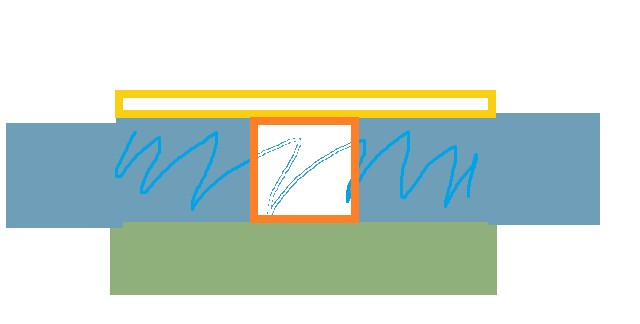
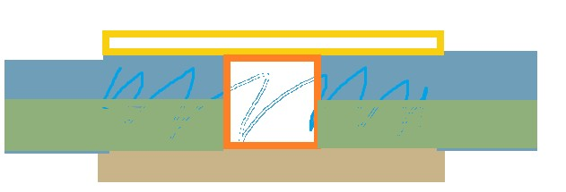
Stairs come next. They climb one storey, are always a tile long, and need floor behind them to walk up to. Most of the work was in everything they mustn't do: hang over rock, sit in pockets you can't leave, or fill a narrow strip so you can't walk past.
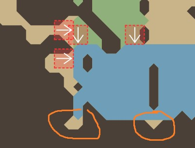

Small pockets now get filled in. Where a stair still can't fit cleanly, it becomes a ladder flat against the cliff. And getting back to everywhere isn't enough, because falling off near a ledge could mean a long walk round. A few stairs go in where the walk back would be longest.

v6 takes the levels off the drawing page and into the game itself. Floors stand at their level, cliffs run along the lines where levels meet, and the stairs, ladders and causeways from the drawings are built in 3D. You walk up stairs, climb ladders, cross a causeway or walk under it through its doorway, and drop off any edge.
Ladders first came out side-on, facing the way the grid ran instead of the cliff they were on, with rails sticking up past the top. Now each one faces its cliff, diagonal ones included, stops at the top edge, and you climb it at walking pace.

Where a full ladder would hang off a corner, there's a half-width one. Ladders take the metal of the area too, the same metal as the pipes where there are any.
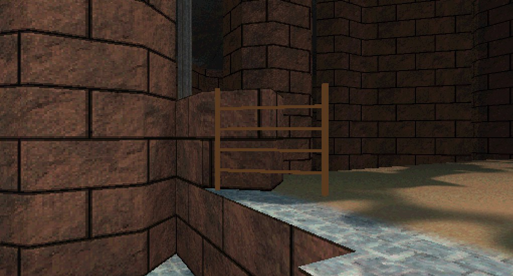
On some maps the start was walled in. The edge zones' floor ran right out to the border, and the game treated the outer tile as out of bounds, so the only way out wasn't walkable. The outer ring is always rock now, and a test walks every map from the start with the real movement rules to make sure nothing is shut off.
The rock round the outside of a map was dead space. So the generator runs again on another seed, keeps only the floor that lands on that outer rock, and stands it a storey or two above the highest floor. Thin walls and pillars inside the map stay rock and just get taller, and the ceilings rise over everything. Where the second layer meets the first it ends in an open cliff, and the same stairs, ladders and causeways join the two.
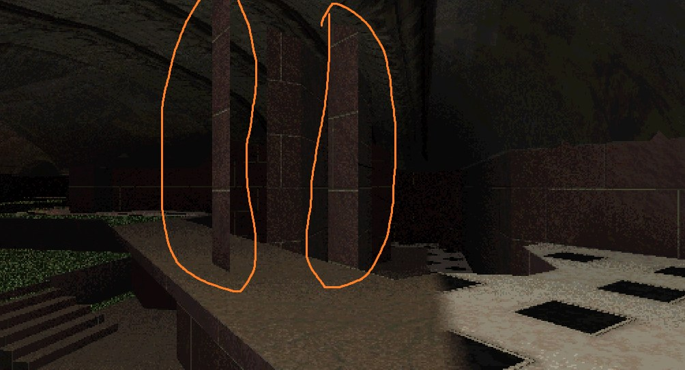
Causeways crossing the second layer had walls standing up through them, where the fill under the deck met plain rock. Those walls now step down to the deck.
The skylight beams didn't reach their openings any more once the ceilings rose. Now each beam is one long prism along the sun's angle, starting well above the opening and running straight through the level.

The map changed too. I wanted it like the level pages: dark rock and one flat colour per level.


There's a fog of war option that reveals the map in a circle round wherever you've been, and a path option that draws a line behind you. The exit is gold and always shows through the fog.
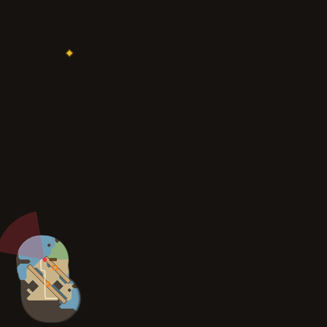
An idea from the very start: stamps, hand-designed pieces of map dropped into the generation. They're for layouts the rules would never make, too symmetrical or simply not allowed, that would still look good. A stamp only holds level geometry, rock or floor and how many storeys up. Everything else, the law, textures and light, comes from wherever it lands, like any other part of the map. Now and then a seed picks one, turns or mirrors it, and drops it centred on a zone. The stairs, ladders and causeways then join it up like everything else.
Stamps get drawn in their own editor, on the same grid the map uses, with mirror painting for symmetry and a preview of the eight ways a stamp can be turned.
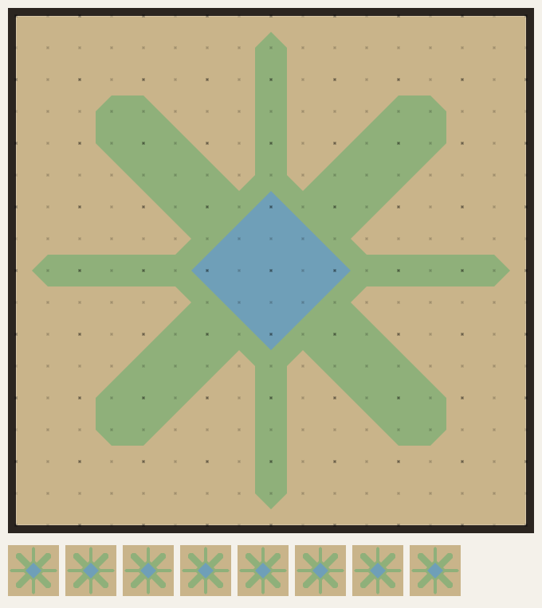
The first set was squares and crosses: towers in the corners, a raised cross, a grid of pillars. They were too close to what the generator already makes, and you couldn't tell them apart from it.
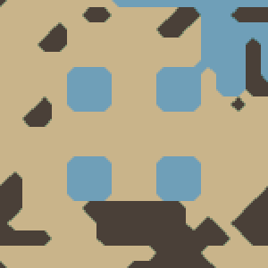
So the second set is everything the rectangles can't do: circles, eight-way symmetry, diagonals, a fractal. Curves need room, so these are six to ten tiles across and can spill past the zone they're centred on.
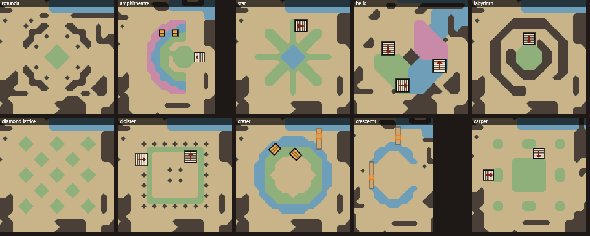
The connector pass fought them at first. It flattens any small raised patch it can't put a stair onto, which wiped out the rotunda's dais and the fractal's plinths. Now small raised patches from a stamp stay as plinths you can't climb, like pillars. The first lattice had its diamonds touching at the corners, which closed the floor between them into holes you could drop into and never leave. Its diamonds are spaced apart now, and the rule only covers raised patches, never holes.